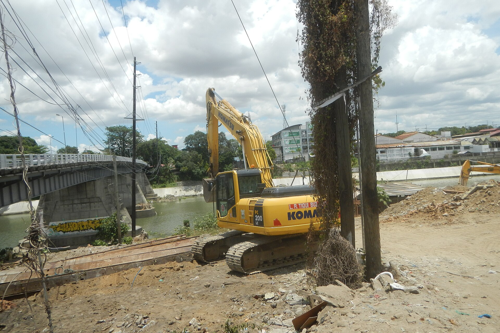
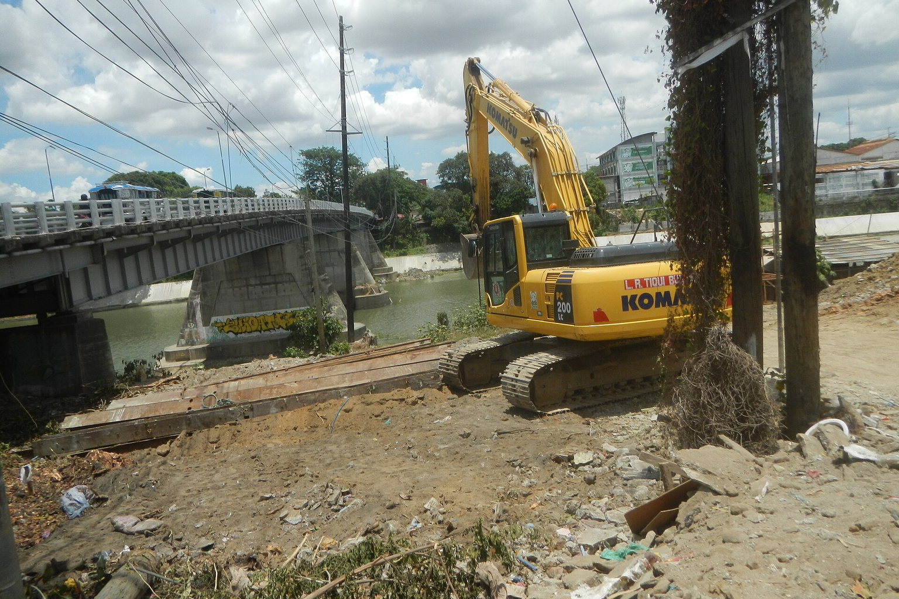
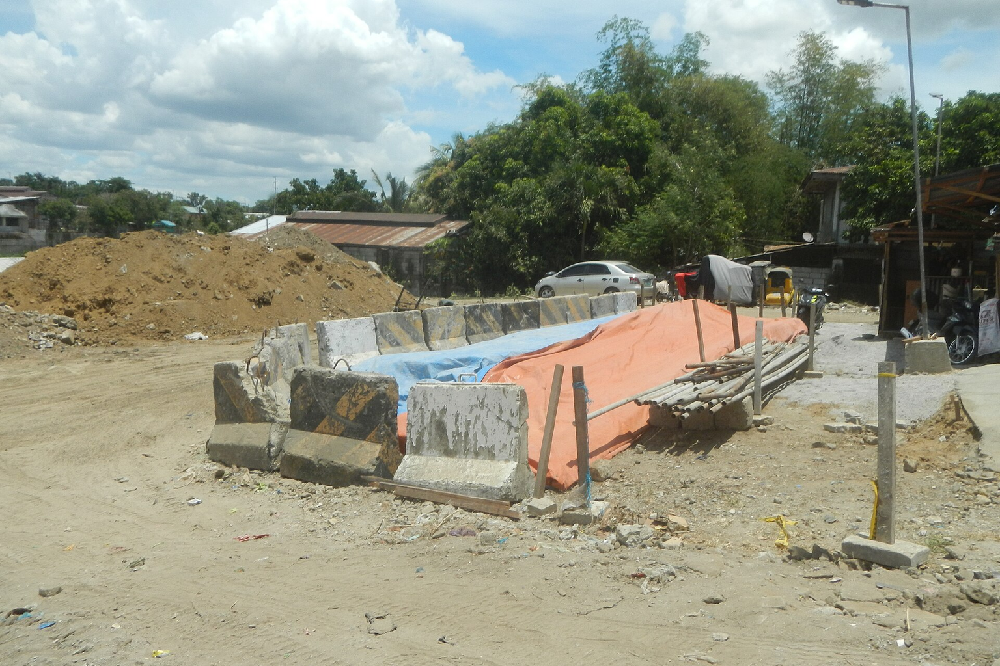

A validation phase is required before committing capital to Global Sovereign AI Infrastructure: National Computing Strategies and Semiconductor Supply Chain Resilience by 2030. This report examines the intersection of sovereign AI infrastructure, climate resilience, and semiconductor demand, driven by China's 2026 disaster response experience. It synthesizes private-document evidence on the disaster's impact and commercial opportunities with supplementary web evidence on opportunity assessment and national AI investment plans. The analysis is structured to support decision-making for sovereign investors and technology partners, with a validation-only recommendation boundary.
Executive Decision Baseline: The 2026 Disaster as a Catalyst for Sovereign AI and Climate Resilience Investment
The 2026 disaster in China has crystallized the need for AI-driven climate resilience infrastructure, creating a multi-billion-dollar market opportunity that sovereign investors cannot ignore.

The private document details the 2026 disaster's impact: at least 101 deaths, 30 missing, and 364 injuries across four major events (Guangxi, Hubei, Chongqing, Gansu). These figures underscore the scale of the crisis and the urgent need for resilient infrastructure. The document identifies key commercial opportunities in climate resilience: water conservancy upgrades, urban drainage, geohazard monitoring, emergency equipment, and disaster insurance.
These align with the AI video analytics market, projected to grow from $8.50 billion in 2025 to $28.76 billion by 2030 (27.6% CAGR), indicating strong demand for AI-driven solutions in smart city and disaster management applications. Sovereign AI infrastructure plans are massive: China is investing $295 billion over five years in AI datacenters, while US hyperscalers (Amazon, Google, Meta, Microsoft) plan $725 billion for 2026 alone.
This scale highlights the strategic importance of AI infrastructure, and the disaster response experience in China could inform how these investments are prioritized, particularly for climate resilience applications. The management implication is that sovereign investors should validate existing strategies that integrate AI infrastructure with climate resilience, rather than committing to new, unproven initiatives.
The evidence supports a focus on digital water management, geohazard monitoring, and emergency response systems, which have demonstrated need and government backing. The private document's emphasis on technology-driven solutions with recurring revenue aligns with this strategic direction, ensuring that investments are both impactful and sustainable.
- text.md — Provides the human and economic toll that drives investment urgency.
- text.md — Quantifies the economic impact and insurance market response, indicating a growing market for climate risk models.
Options and Trade-offs: Prioritizing Technology-Driven Resilience vs. Traditional Infrastructure
The disaster response highlights a clear trade-off: technology-driven resilience solutions offer higher margins and recurring revenue, while traditional infrastructure provides immediate but volatile demand.

The private document explicitly states that the most sustainable opportunities are in 'climate resilience infrastructure' over the next 3-5 years, including water conservancy digitalization, urban drainage, geohazard monitoring, and emergency equipment. These are technology-intensive and offer higher technical barriers and service revenue. In contrast, traditional reconstruction materials and engineering face intense competition and slow payment cycles, making them less attractive for investment.
The document advises prioritizing companies with existing government orders and operational income in water digitalization, monitoring, and drainage equipment. The AI video analytics market, growing at 27.6% CAGR, is a proxy for the demand for AI-driven monitoring and early warning systems. This market is directly relevant to disaster management, as video analytics can enhance public safety and traffic management, which are critical during floods and landslides. The trade-off is between short-term gains from reconstruction and long-term value from technology.
The evidence suggests that technology-driven solutions align better with sovereign AI infrastructure plans, which are investing heavily in computing power and data centers that can support such applications. Emergency equipment and mobile infrastructure can see immediate orders, but revenue is volatile and tied to disaster cycles. Investors should be cautious about over-committing to such segments without long-term contracts, focusing instead on stable, recurring revenue models.
The private document's guidance is clear: prioritize companies with government orders and operational income. This approach mitigates risk and aligns with the strategic direction of sovereign AI investments. The trade-off is between short-term gains from reconstruction and long-term value from technology, with the latter offering more sustainable returns.
- text.md — Directly guides investment prioritization toward technology-driven resilience.
- text.md — Identifies specific high-value technology segments with recurring revenue potential.
Causal and Economic Drivers: How Disaster Response Accelerates AI and Semiconductor Demand
The 2026 disaster is a causal driver for increased investment in AI-driven monitoring and early warning systems, which in turn strains semiconductor supply chains.

This funding is primarily for emergency response, personnel安置, and infrastructure repair. The private document also identifies opportunities in technology upgrades, such as digital monitoring and early warning systems, which are expected to drive demand for sensors, edge computing, and AI chips. The demand for these technologies is a direct consequence of the disaster, as the document lists specific technologies: slope radar, InSAR satellite monitoring, BeiDou positioning, rainfall and soil moisture sensors, and AI landslide warnings.
Sovereign nations are responding by investing heavily in AI infrastructure: China's $295 billion plan and the US hyperscalers' $725 billion for 2026. These investments will increase demand for semiconductors, making supply chain resilience a strategic priority. This demonstrates a clear causal link between disaster response and the acceleration of AI and semiconductor demand, reinforcing the investment thesis. The AI video analytics market, projected to reach $28.76 billion by 2030, is a key indicator of this demand.
The market's growth is driven by public safety and intelligent traffic management applications, which are directly relevant to disaster response and urban resilience. The private document's emphasis on technology-driven solutions aligns with this trend. However, the direct allocation to technology upgrades is not specified in the evidence, so this remains an inference based on the document's broader recommendations. This funding, while not explicitly earmarked for technology, provides a baseline for potential investment in resilience infrastructure. The causal chain from disaster to technology demand is clear, but the exact allocation remains uncertain.
- text.md — Shows the specific technology demand that drives semiconductor needs.
- text.md — Demonstrates government funding that can be channeled into technology investments.
Failure Modes and Uncertainty: Risks in the Climate Resilience and Semiconductor Investment Thesis
The investment thesis faces several risks: the volatility of disaster-driven demand, the uncertainty of government funding continuity, and the potential for semiconductor supply chain disruptions.

The private document warns that emergency equipment demand is volatile and tied to disaster cycles, which could lead to boom-and-bust investment cycles. Similarly, traditional reconstruction sectors face long payment cycles and intense competition, making them risky for investors seeking stable returns. Government funding, while significant, may not be sustained. Long-term investment in climate resilience will depend on sustained policy support and budget commitments.
Semiconductor supply chains are vulnerable to geopolitical tensions and capacity constraints. The web evidence indicates that domestic fabs are expected to begin production by 2026, but this is not guaranteed. Despite these risks, the private document identifies a clear opportunity in exporting integrated disaster resilience solutions to Gulf countries like the UAE. This diversification could mitigate domestic market volatility, but it depends on successful technology transfer and market entry.
The AI video analytics market projection of $28.76 billion by 2030 is based on a specific report and may not fully capture the impact of disaster-driven demand. Investors should treat this as a supplementary data point, not a definitive forecast. The private document also notes that traditional reconstruction materials and engineering face competition and long payment cycles, which may not translate into good stock investments. This underscores the need for a cautious approach, focusing on technology-driven solutions with recurring revenue and government contracts.
The private document also highlights the volatility of emergency equipment demand, which can lead to unpredictable revenue streams. This risk is compounded by the uncertainty of government funding continuity, as initial disaster response funding may not translate into sustained investment. Investors should therefore adopt a staged approach, validating demand and policy support before committing significant capital.
- text.md — Highlights the volatility of disaster-driven demand.
- text.md — Warns against over-investment in traditional reconstruction sectors.
Staged Decision Gates: A Validation-Only Approach to Investment
Given the evidence, the recommendation is to validate existing investment strategies rather than commit to new, aggressive positions.

The first gate is to validate the current portfolio's exposure to AI-driven climate resilience infrastructure. The private document suggests that companies with government orders and operational income in water digitalization, monitoring, and drainage are the most attractive. Investors should assess whether their current holdings meet these criteria. The second gate is to monitor the evolution of government funding and policy.
The disaster has prompted immediate funding, but long-term investment will depend on sustained budget commitments. Investors should track policy announcements and budget allocations to ensure the market remains viable. The third gate is to evaluate the semiconductor supply chain resilience. As demand for AI-driven monitoring grows, the availability of chips will be critical.
Investors should assess the progress of domestic fab production and the diversification of supply sources. The fourth gate is to explore the export opportunity to Gulf countries. The private document highlights the potential to transfer China's integrated disaster resilience solutions to the UAE. This could provide a new revenue stream and reduce dependence on the domestic market.
The validation-only approach may miss early-mover advantages in emerging markets. However, the evidence suggests that the market is still developing, and a cautious approach is warranted given the volatility and uncertainty. The staged gates allow for incremental investment as evidence of sustained demand and policy support becomes clearer.
- text.md — Identifies a concrete export opportunity that can be validated.
- text.md — Provides a clear investment criterion for validation.
Where to Start
The near-term objective is to turn the evidence into a few choices that preserve learning before committing scarce capital or operating capacity.
-
Decision gateValidate current portfolio exposure to AI-driven climate resilience infrastructure, focusing on companies with government orders and operational income in water digitalization. Progress should be visible through at least 50% of portfolio companies in this sector have confirmed government contracts and positive operating cash flow. The private document explicitly recommends prioritizing such companies over short-term reconstruction plays, as they offer stable recurring revenue.
-
Decision gateAssess semiconductor supply chain resilience by tracking the progress of domestic fab production and the availability of key components for sensors and edge computing. Progress should be visible through identify at least two domestic suppliers for critical components and establish contingency plans for supply disruptions. The demand for AI-driven monitoring will strain supply chains, as indicated by the growth in AI video analytics and the need for advanced chips.
-
Decision gateExplore the export opportunity to Gulf countries, particularly the UAE, by developing a pilot project that integrates China's disaster resilience solutions. Progress should be visible through sign a memorandum of understanding with a UAE municipal or industrial authority for a pilot deployment. The private document highlights this as a lucrative cross-border opportunity, leveraging China's disaster response experience and technology.
-
Decision gateRe-evaluate the investment thesis based on the actual adoption of AI-driven monitoring systems and the evolution of the AI video analytics market. Progress should be visible through compare actual market growth against the projected $28.76 billion by 2030; adjust investment strategy if growth lags. The market projection is a supplementary data point and should be validated with real-world adoption rates to avoid over-reliance.